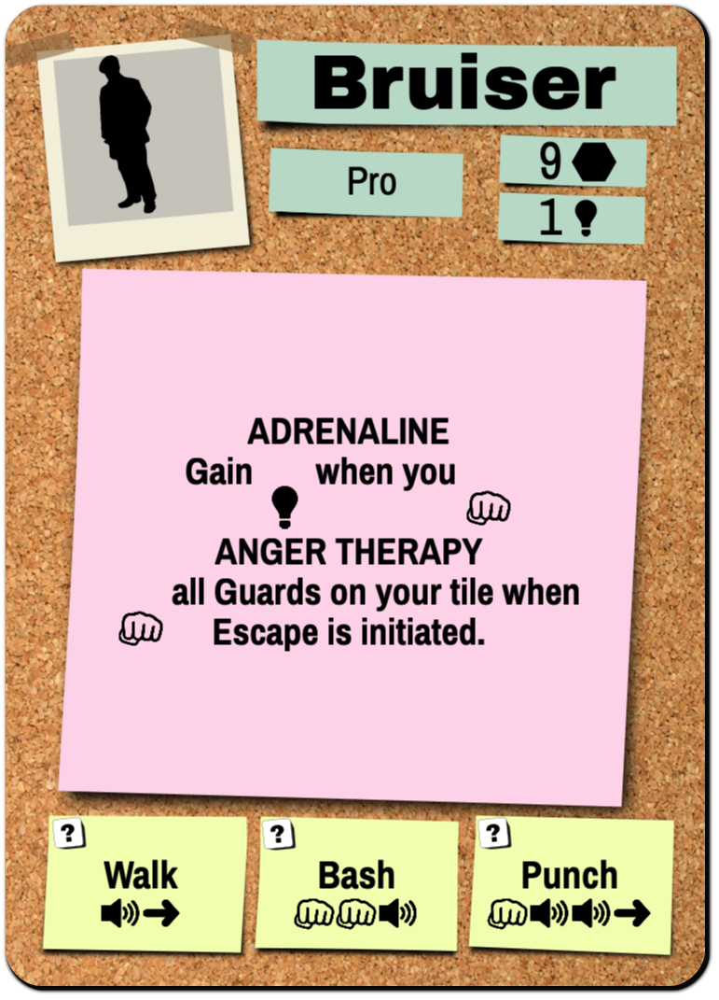
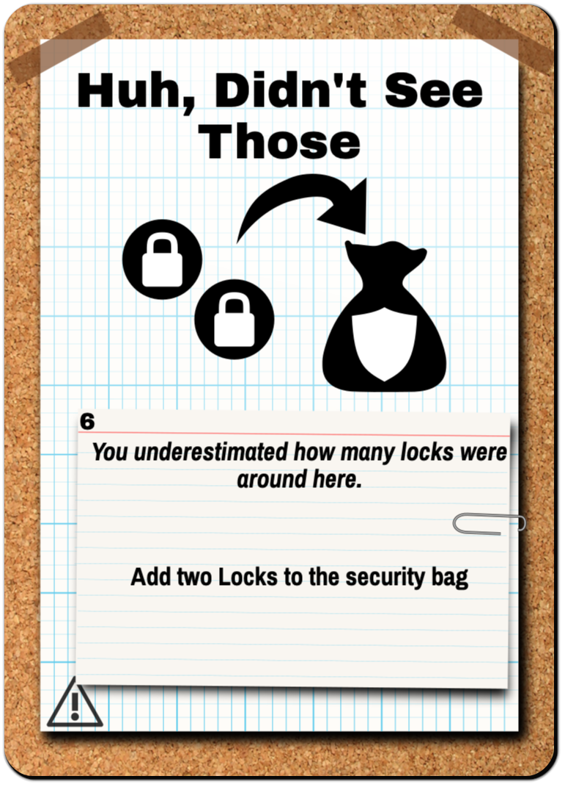
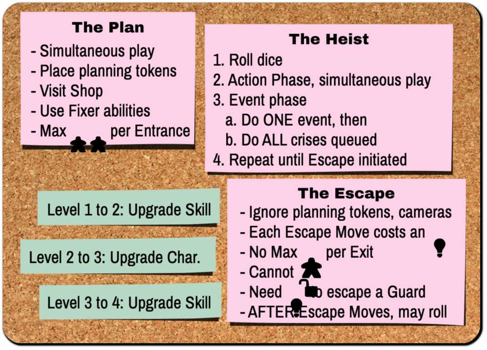
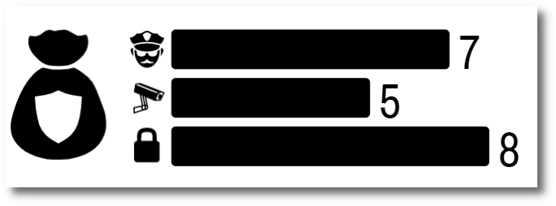
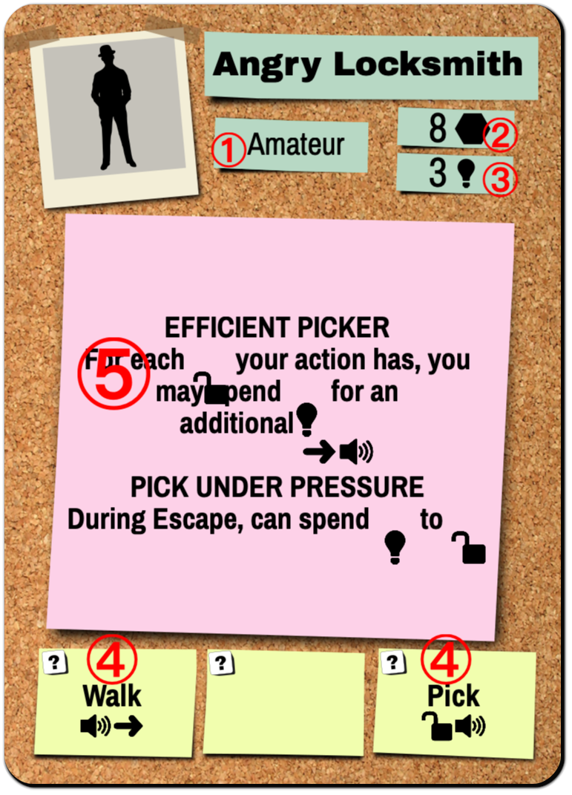
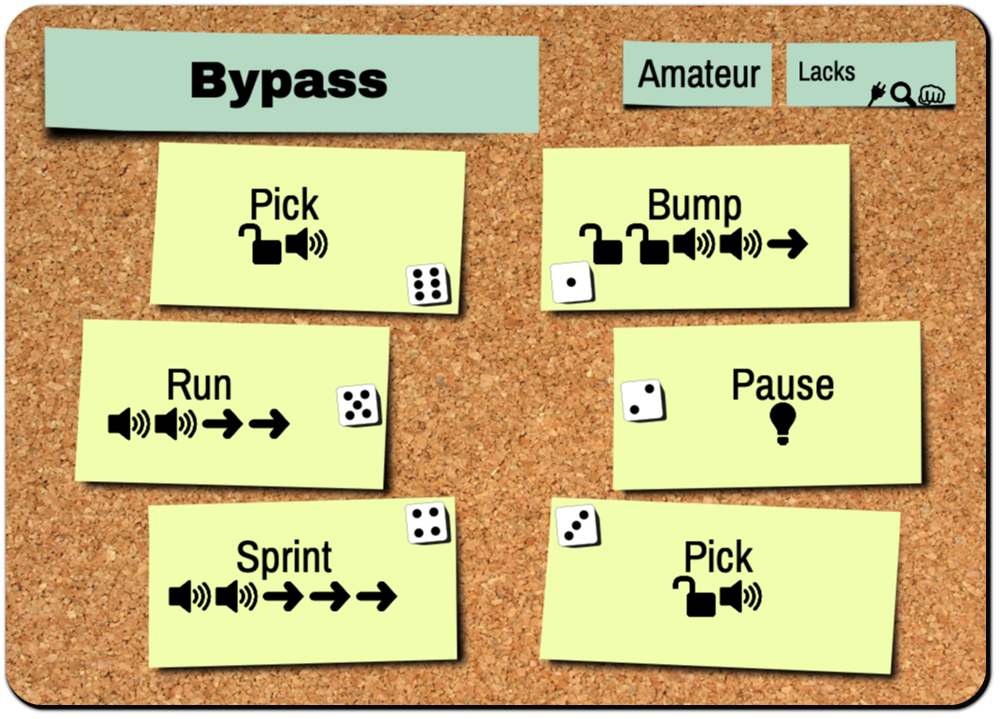
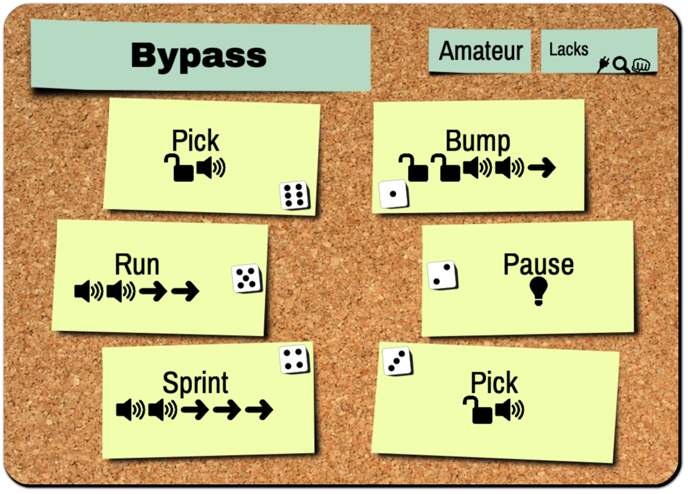
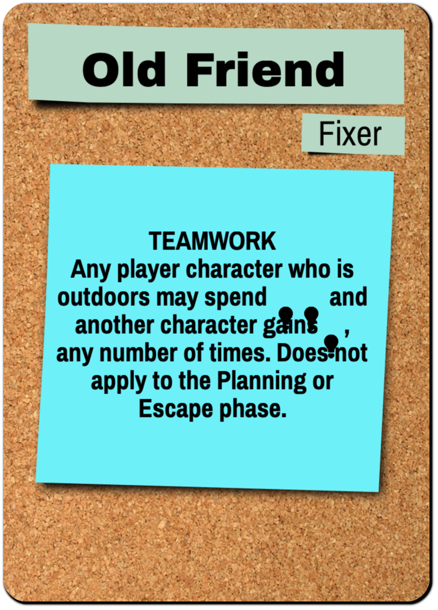
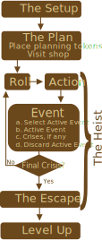

You are a uniquely skilled individual in a career of high-risk, high-reward thievery.
During each heist, you will collaborate using simultaneous gameplay. You will plan your heist, but you will also have to know when to abandon your plan. You use Ideas to get the actions you need, but don’t spend too many… you’ll need those Ideas to escape, too!
You will start as an Amateur criminal with Amateur skills who is new to River City.
But over time, hopefully with a few good decisions along the way, you and your crew will level up your characters and skills as you make your way through the city.
Version 24.0
Table of Contents
The Pieces
- 32 Security hex tiles
- 5 Entrance/Exits
-  24 Character cards
 3 NPC cards
3 NPC cards 14 Skill cards
14 Skill cards-  41 Event cards
 12 Crisis cards
12 Crisis cards 15 Fixer cards
15 Fixer cards 15 Item cards
15 Item cards-  4 Game Helps
 1 Tracker
1 Tracker- 1 NPC token
- 4 Player tokens
- 5 dice
 48 Planning tokens
48 Planning tokens 12 Lock chits
12 Lock chits 15 Camera chits
15 Camera chits 15 Guard chits
15 Guard chits 8 Guard Dogs chits
8 Guard Dogs chits 4 Jewels chits
4 Jewels chits 4 Lockdown Gates
4 Lockdown Gates- 1 Kennel token
 2 Keycard Locks
2 Keycard Locks 2 Reinforcements tokens
2 Reinforcements tokens- 2 Keycards chits
- 1 USB key chit
- 2 Document chits
- 2 Story chits
 2 Watchtower tokens
2 Watchtower tokens- 4 Servers tokens
 4 Remote Locks
4 Remote Locks 4 Remote Lock tokens
4 Remote Lock tokens- 1 Item chit
 36 Idea tokens
36 Idea tokens 12 Cash tokens
12 Cash tokens
The Setup
Step 1. As a team, decide your next heist. Heists are available to you in the River City booklet. Each heist is labeled with a difficulty level based on your team’s average level. New players are level 1.

Step 2. Set up the board in the middle of the table. Following the diagram for your heist, set up the hex tiles so that they match the picture.
If the hex has a shield, use the Security side of the tile. In all other cases use the blank side and add the pieces neccessary to match the diagram.

Step 3. Set up the security bag. The scenario indicates how many Guards, Locks, Cameras and other circle chits should go into the bag. Leave leftover circle chits by the board.

 

Step 4. Build Characters. Every player gets one Character card and two Skill cards. New players start with Amateur cards.
Tip: The scenario booklet has some pre-built character+skill pairings
Step 5. Distribute player tokens. These are: 6-sided die, meeple, planning tokens, and ideas . Give ideas and planning tokens as indicated by the character card. For example, the Angry Locksmith has a Planning Memory of 8.
Step 6. Place Noise tracker in view of everyone and according to the number of players (3- or 4-player). Place the Noise Tracker marker on its starting place.

Step 7. Set up the Event Deck according to the scenario, using the numbered cards in the order indicated. The deck should be entirely face-up with the first card on the top and the last card on the bottom. It will consist of both Event and Crisis cards.

Step 8. Get Your Fixers. If this is your first heist, start with Old Friend. Otherwise, locate all of the Fixers you have unlocked from previous heists. Place them where everyone can read them.
Concepts
The Board
The board is a set of modular double-sided hex tiles. The rotational orientation does not matter. Each tile is Blank on one side, and is a Security tile on the other side. A Security tile represents an unknown Security Chit that will be drawn from the Security Bag.
 Blue is adjacent to a Camera, but not to a Guard
Blue is adjacent to a Camera, but not to a Guard
Adjacent. You are adjacent to something if you are on a tile that shares a border with another tile. Being on the same tile is not considered adjacent.
Entrances & Exits. Each board has one or more entrances/exit tiles. If a character is on one of these spaces they are considered to be Outdoors, otherwise they are Indoors. The terms Entrance and Exit refer to the same tile and can be used interchangeably.
Limit 2 to Entrance During Planning. By default, unless the scenario specifies otherwise, Entrance/Exit tiles are limited to 2 characters at the beginning of the heist. This limit does not apply to the Escape phase, by default.
External. Some cards refer to “external sides”, which are a side of a hex tile that does not lead to a fully-enclosed space by hexes (see figure). An “external tile” is a tile with at least one external side.
Gaps. Some cards refer to a “non-tiled gap”, which is a hex-spaced area between two hex tiles that does not have a hex (see figure).
Security Chits
Security Chits are obstacles your team will encounter. Some will be known when you set up the board, others will be unknown in the Security Bag.
| Name |
Active |
Inactive |
Behavior |
| Guard |
Guard |

Subdued |
Slows you down. If you share a space with a Guard, you may not leave the tile until he is Subdued. You may move into a space with a Guard. |
| Lock |
Locked |

Unlocked |
Prevents passage. You may not enter a Locked tile. You may exit a locked tile if it was re-locked while you were on it. |
| Camera |
Live |

Disabled |
Increases Alerts. You may enter a space with a Live Camera, but raise an Alert (i.e. discard the top Event card). If a Disabled camera is powered back on while a character is on it, discard one Event card per character. |
More chits in the back. Other chits that go into the security bag can be found in the back of the rulebook. Any circle-shaped chit may at some point go into the security bag.
Reveal and Auto-Reveal. During a heist, when a character is adjacent to an unknown Security tile (i.e. no Security chit placed yet), the chit is “auto-revealed” where you remove a random chit from the bag and place it on the tile in its Active state. A Security chit may also be placed with a Reveal ( ) sub-action (see below).
) sub-action (see below).
Actions & Sub-Actions
Skills and Characters allow you to take Actions. Most Actions are a grouping of Sub-Actions with a name (e.g. Punch ). All sub-actions are optional, except for Noise and Alert. The Sub-Actions are:
- is Move to an adjacent, planned, not locked tile
 is Unlock 1 locked, adjacent tile
is Unlock 1 locked, adjacent tile- is Subdue 1 guard on or adjacent to your tile
- is Disable 1 camera on or adjacent to your tile
- is Add 1 Idea to your character
- is Reveal 1 security token anywhere on the board. Remove from bag if all unknowns have been revealed.
- is Loot: Gain $1k from the supply as loot.
- is Increase the Noise level by 1 (Required)
- is Alert. Discard the top Event card. (Required)
Characters
Each Character card has:
Skills
Each character gets two Skills. Each Skill has six Actions ① that each correspond to a die roll ②. During a heist, you will be rolling your die to determine which Actions are available to you. Every skill is either Amateur or Pro.
Tip: When building a character, use Lacks ③ to see what the subactions are missing so you can find a good combination.
Events
Events will impact your team each round.
One Event per round. You will be encountering one event each round. Which event happens will be determined by how many “Raise ” you encounter.
Raise Alert. Every time you are told to “Raise ”, remove the topmost Event card and discard it for the rest of the heist. The Event card that is at the top of the deck at the end of the Action phase is the one you will execute.
Plan ahead. You are welcome (encouraged!) to look ahead at potential upcoming events at any time. We recommend designating one person to keep track of the Event Deck and warn the group of potentially bad situations.
Crises
Every Event Deck will have a few Crisis cards in them. These are particularly strong and can create big problems for any team of scoundrels.
All Crises will happen. Unlike Events, all Crises are guaranteed to happen in a heist. You will be doing all encountered Crisis cards after your round’s Event. (See Phase 3. Event Phase for more details).
Not an Alert. When a Crisis card is the top-most card in the Event Deck, immediately set it aside and continue dealing Event cards. Crisis cards are not removed because of “Raise ”.
To summarize, you will be doing one Event per round, then zero or more Crises per round. A Crisis is not an Event.
Noise
Every action has a cost. For each your team incurs, increase the Noise tracker by one.
Raise Alert . If the Noise tracker reaches a space with an Alert , immediately Raise Alert . When the Noise marker reaches to the final slot, each noise thereafter raises one Alert .
Loot & Items
Pickup. When a character shares a tile with a Loot chit, you may immediately place the chit on their Character card.
Insta-transfer. A character may also “drop” loot on their current space for no cost, which means that two characters may effectively “insta-transfer” loot from one to another when sharing a space. This can be done at any time.
Deep Pockets. There is no limit to the amount of loot you can carry.
Items are like transferrable skills. Item cards can have passive abilities and/or actions (like Character or Skill cards), except they can be transferred just like any other Loot.
Not Ours Until It’s Out. When a character with Loot gets Outdoors, the team has acquired that loot for the heist. For Cash, increase the Team Cash tracker accordingly.
Cash is one item. Any amount of cash in one place is considered to be one piece of loot no matter how many chits it takes to represent it.
The Shop
Between heists, your team may visit The Shop to purchase Item cards.
Shop grows with you. Initially, the only cards in the Shop are the ones with the Shop icon  . However, once a a player discards a discovered item, that card is available for purchase in later planning phases.
. However, once a a player discards a discovered item, that card is available for purchase in later planning phases.
Returning Items. You may sell items back to the shop for half of their price, rounded down.
Fixers
Fixers help you plan. Completing heists give you access to additional Fixers. Fixers provide a variety of helpful bonuses to assist you in future heists. You may use as many Fixers as you have unlocked in a given heist.
Get the lay of the land. You are welcome (encouraged!) to read ahead and plan your path through River City to find the best Fixers for your team. There are no “spoilers” narrative-wise. Fortune favors the prepared.
Special Rules
Specific beats general. Scenarios and cards will sometimes have modifications to these rules. If there is a conflict, the scenario or card takes precedence over these rules.
Example of Special Rule. Ordinarily, there is no maximum on the number of characters that use an exit. But, in County: The River, the maximum number of characters that may use each exit is 1.
Heist Gameplay

The game takes place over a series of phases, and each phase has simultaneous play.
First, your team will plan out how you will execute the heist. You will being doing recon, spending money on Fixer abilities, buying Items at the Shop, and placing planning tokens to coordinate your efforts.
Then, you will carry out that plan… or at least attempt to.
The majority of the time spent is in the Action phase, where you are executing your heist. The Planning phase typically takes a few minutes, and Escape is very short. The Event Phase is (mostly) mechanical and also brief.
Part I: The Plan
Place Planning Tokens. Every time you do a Move, you must move onto a hex that you have Planned with a Planning Token of your color. Thus, mark every hex tile that you will be allowed to move on by placing a Plan token of your color on the hex tiles you will (probably) move onto. Entrance tiles do not need a token.
Note: Unless a special ability allows you to re-plan mid-heist, you will not be able to change these planning tokens!
 Blue and Red place their planning tokens
Blue and Red place their planning tokens
Start on Entrances. Place your Character pawn on the Entrance tile where you will plan to start. The default limit character limit per Entrance in planning is 2, unlimited during Heist and Escape parts.
Use Your Fixers. Most Fixers provide a “During Planning…” ability that could potentially help your team.
No auto-reveals yet. Do not auto-reveal any hidden security chits you may be adjacent to until Heist phase.
Visit the Shop. Your heists will earn you money to purchase Items. Using team cash, you may purchase as many Item cards as are available.
Note: on your first heist, you have $0k team cash and therefore cannot purchase anything from the shop.
Part II: The Heist
For each Round, repeat Phase 1 through 3 until the Escape Phase.
Phase 1. Roll
Roll your die.
Phase 2. Action
Your die is your action. You have a minimum of four options: at least two Actions from your Character and one Action from each Skill. When you choose an Action, place your die on that Action to indicate your commitment.
Modify rolls. You may spend your Ideas to modify the die roll by +1 or -1 each. You may “wrap around”, that is, spend an to go from a 6 to a 1 and vice versa.
Interleaving Subactions. During the Action phase, everyone is working collaboratively and simultaneously. You may execute your sub-actions in any order. You may interleave your sub-actions with the sub-actions of other players. Doing this part effectively takes teamwork and is the key to victory!
Undoing. If unknown information is revealed after you commit to an Action, your Action cannot be undone, otherwise you may undo in good faith.
Required subactions The Noise() and the Alert() sub-actions are required, but all other sub-actions are not required. If any Crisis card ever appears on the top of the Event deck for any reason, immediately queue it.
No passing. You MUST choose an Action each round.
No alphas. You have the final say about your character.
Escape any time. You may opt to initiate Escape Phase at any time. You must still do the Event phase.
Tip: Wait to account for noise until the end of Action phase. Ask everyone to hold up a finger for the number of noises they incurred - which they can see from the die sitting on the action they took. By design, accounting for noise at the beginning or end of the phase makes no strategic difference.
Example of Modify Roll. Phil as the Angry Locksmith may always take Pick or Walk regardless of what he rolled. Suppose he has the Wing It and Smash ‘n’ Grab Skills, and rolled a 1, then he also has Punch and Discover as options. If he spends an , then he also has Smash, Grab, Strongarm, and Scamper available.
Example of Interleaving & Undoing. Jacob takes the Sprint() action but after his first he Auto-Reveals a Lock in his path. He cannot undo his action, since he revealed new information. Fortunately, Kelly the Angry Locksmith is one space away and takes PICK with EFFICIENT PICKER (), which lets her and then . Jacob continues with his other . Increase level by 4.
Phase 3. Event
When all players have finished their Actions and all noise has been accounted for on the Noise Tracker, the team enters the Event phase.
One Event, Multiple Crises. In this phase, you will do exactly one Event, and then any Crises that have queued up.
Active Event. First, pick up the Event card that was on the top of the deck at the start of this phase. This is the Active Event. Read the text as instructed by the card. Some Events may incur more “Raise ”, in which you deal additional cards off the Event deck as you would during the Action phase, but the Active Event card does not change. If the Event deck was exhausted in the Action phase, the final Event card will be the Active Event. A Crisis card can even be queued during an Active Event.
Discard Active Event. When the Active Event is finished, discard it.
Events then Crisis Queue. Follow any Crisis cards you have set aside in the queue. Crises should be executed in the order they were encountered. Discard them after use.
No actions. Characters may not take actions or use abilities during this phase, unless the text on their card explicitly says so.
Take from supply. Whenever an Event or Crisis calls for new chits to be placed, take them from the supply, not the bag.
Sound the Alarm. If final Crisis is reached, enter the Escape Phase. Otherwise, proceed back to Roll.
Example of Active Event. It is the end of the first round of a 4-player game. The team generated noise, meaning they raised one . Thus, the Active Event in this case is event card 2 (Get Outta My Way). Following the card leads them to , so they discard Events 3 and 4 along with their Active Event card (event 2). After the 4th Event card is discarded, the topmost card is a Crisis card. This is immediately added to the queue. The team now enters the Crisis Queue and does the one crisis card, then discards that card too.
Tip: Event effects are something you can potentially avoid with crafty noise management. Crises will always happen. Events and Crises never force you to take noise, but they can force more .
Phase 4. Escape
When the Escape Phase starts, all Security chits are revealed. Then, in any order, each character who has not reached an Exit tile determines if they can reach it.
Escape Moves. Declare the number of Escape Moves you will take to an exit. Escape Moves are not the same as . Instead:
- Ignore Planning tokens (Escape Moves need no planning)
- Locked tiles are impassable by Escape Moves
- You may Exit an Unsubdued Guard for one extra Escape Move per guard.
- Cameras have no effect during Escape.
- Each leftover you have may be used for 1 Escape Move.
Last Ditch Effort. After declaring your Escape Moves, you may roll your die. The number shown on the die is equal to the number of Escape Moves you may use to reach an Exit. If you still cannot reach, you are Busted.
No costly abilities You MAY NOT use abilities that cost or during Escape.
Insta-transfers. You MAY pick up or drop off loot during the Escape Phase, even during Last Ditch Effort.
Last Ditch Effort example. Mark the Mastermind has and escape is initiated. He calculates he needs 7 Escape Moves. He uses his and now he needs 4 Escape Moves. So, for his last ditch effort he rolls his die and gets a 3. He’s now Busted at the door with the loot, and the heist appears to be lost. BUT! Sally the Script Kiddie realizes she still has and decides to run in and get the loot from Mark. She gets the loot, and the heist succeeds with. Mark is still Busted, however.
Costly abilities example: VENT CRAWL is not allowed during Escape, but GREAT IN A PINCH is allowed
 Example of Escape Moves. Blue needs 5 Moves to exit: one to enter the space with a Guard, two to exit the (unsubdued) Guard, and two more moves to reach the Exit. Using his last , he now needs to roll a 3 or higher to get out. Red and Green are Busted.
Example of Escape Moves. Blue needs 5 Moves to exit: one to enter the space with a Guard, two to exit the (unsubdued) Guard, and two more moves to reach the Exit. Using his last , he now needs to roll a 3 or higher to get out. Red and Green are Busted.
Busted
If you are Busted, you are out of gameplay for the rest of this Heist. All loot on your character is lost. Your Character is now in jail, and your team may choose to rescue this character in a future heist. Both you as a player and your character still level up (see Level Up).
End of a Heist
Ideas don’t carry over. Leftover are lost at the end of a heist.
Everyone Levels Up. At the end of every heist, every player levels up the character they just played (see Level Up)
Campaign
Your box is your universe. Every time a new character is built, they must be named and their status tracked on their Character Sheet.
Named Characters
A named character is a pairing of one character and two skill cards.
For example, Josh has a character named Cam who is a Tinkerer with Assault and Smash ‘n’ Grab.
No evil twins. You may NOT create a new named character with exactly the same card combinations as another named character.
Peristent Statuses. A named character’s status, such as “Busted”, persists between games. Individual scenarios may assign statuses to named characters based on the outcome of a heist attempt.
For following the above example, suppose Cam is Busted at the end of a heist, then anyone who wants to play Cam again must use the Busted status.
Loosely Affiliated. Players may freely come and go from the campaign. A player is not limited to always playing their original named character. All heists have 3- and 4-player options. You are welcome (encouraged!) to try out new characters.
Losing a Heist
If your team does not complete the heist objective, you do not gain the favor of the Fixer. You still keep any loot that was taken. All players level up after a heist (see Level Up).
Stashed away. Even if every team member is Busted, the Team Cash and known Fixers is available for the next crew.
Winning a Heist
If you have completed your objective, you have gained the favor of that Fixer. All players level up after a heist (see Level Up).
Sacrifices. An objective can still be fulfilled even if some characters get Busted.
Any cash on a Character is added to the Team Cash tracker, as well as any loot. Be sure to note everything in your Campaign History.
Level Up
Players level up as well as characters. Every human player starts at level 1 when they are new to this game. At the end of every heist, regardless of the objective outcome or character fate, every player levels up the named character they just played - even if they have no plans to play them ever again.
Characters Start at Player Level. For the next heist, you may start with a character of the your player level (or less). That character may be new or used previously.
Example of player and character levels. For example, this is Josh’s third time playing this game, so he is Level 3. Last time, Josh’s character Cam who is a Tinkerer with Assault and Smash ‘n’ Grab is Busted. Josh wants to build a new Tinkerer with Assault named Iris. He may not use Smash ‘n’ Grab as the other skill as that would be identical to Cam. Iris will start at Level 3.
Progression. At Level 2, upgrade one Skill card of your choice. At Level 3, upgrade your Character to a Pro version. At Level 4, upgrade your other Skill card. The maximum player and character level is 4 (both pro Skills and a pro Character).
Each Amateur card is given two choices to level into, as indicated on the back of the card. Place your Amateur Character card in the box and choose one Pro card as your new character. Record your choice on your character sheet. Skill cards work the same way.
One Character Class Per Heist. A character class is the name of the amateur version of a character.
For example, a Grease Man and a Burglar cannot be in the same heist.
Conflicting Skills. Named characters are only compatible with each other if the components are available.
For example, the named characters Larry, Curly, and Moe all have Wing It as a skill, but the game has only two Wing It cards. A heist may only have two of those characters, though they all may exist in your universe.
Additional Modules
Remote Locks
You may not enter a tile with a Remote Lock chit on it.
Starting Imprisoned. If you are locked within a remote lock tile at the beginning of a heist, you may not , but you may if actions allow it and are still required.
For each Remote Lock, a corresponding Server exists somewhere else on the board (e.g. x or y). If a character is standing on the Server, then all corresponding Remote Lock rings may be immediately removed.
Guard Dogs
Guard Dogs are Guards.
Chasers. Additionally, when a Guard Dog becomes adjacent to a Character, and is not already sharing a tile with a Character, then:
- Move the Guard Dog onto that character, and
- If the Dog came from the security bag, place a Blank token over the Shield to mark that space as already Revealed.
Indoor creatures. Guard Dogs do not move onto entrances/exits.
Kennel. The hex with a kennel can be freely moved on with no automatic effect. Dogs spawn here as a result of Events and Crises.
Team optimizes ambiguity. If ambiguity ever arises in the behavior of a Guard Dog, the team chooses.
For example, if a Guard Dog is added to a tile that does not already have a character and is adjacent to multiple characters, your team chooses which character the Dog jumps onto.
THERE ARE BETTER DOGS. Some characters have the ability to escape Guards without . If one of these characters shares a hex with a dog and their action puts one tile of separation between them and the dog (e.g. ), the dog stays where it is instead of chasing.
Watchtower
Ranged Camera. The Watchtower is a thermal imaging system that can detect body movement across long distances. A series of Crisis cards will add Guards to locations along the path emanating from a Watchtower.
There must be some kind of way outta here. A Watchtower can be disabled when a character is on that tower when the Watchtower Sweep crisis occurs. The Watchtower does nothing during Escape.
Reinforcements
Problem for Later. A hex with the reinforcements token on it is freely passable. However, a later Crisis card will cause an area effect centered on this token.
Lockdown Gates
There are four Lockdown Gate hex chits lettered A,B,C, and D. The hex is treated as normal (i.e. characters may enter or exit the tile freely unless something else prevents them).
The event deck for the scenario will have Crisis cards and Event cards that will lock these down. This means that the entire hex tile underneath this chit is removed from the board, and that space is now considered a gap. Lockdown Gates are always removed in order: the A tile will be removed first, then B, and so on.
Don’t get locked down. Any character caught on a locked down hex is Busted. Any other pieces on the locked down hex is removed from the board. All Lockdown Gates are removed at the start of the Escape phase.
Auto-replan. Any planning tokens on a locked down hex may be immediately re-planned.
Keycard
No normal lock. Characters may not move onto a space with the Keycard Door, and only the keycard can open it. When a character who has the keycard is adjacent to the Keycard Door, they may remove the Keycard Door token from the board. The Keycard is a form of Loot.
Held by a Guard. If this chit is pulled from the security bag, add a Guard to the hex from the supply.
This never works the first time. The Keycard can be used during Escape, but to open a Keycard Door it costs one Escape Move.
USB key
A USB key is a loot item that can go into the security bag, meaning it must be revealed to discover its location.
Held by a Guard. If this chit is pulled from the security bag, add a Guard to the hex from the supply.
Tunnels
When a scenario map shows Tunnel spaces, then you may add an Entrance token to one of those spaces during planning. If you are allowed more than one Entrance, they cannot physically overlap, i.e. they cannot share the same hex-shaped gap.
Non-Player Characters
A Non-Player Character (NPC) is represented by a white pawn, a white die, and their NPC card. Your team will collaboratively decide on how the NPC spends their action each round. Follow any additional abilities or limitations described on the NPC card. NPCs do not need planning tokens and do not have Skills.
Inactive NPCs. The NPCs Hostage and Prisoner do nothing until taken/freed (respectively). Immediately when they are taken/freed, take out the NPC card and roll a white die for the current round.
Up Close And Personal. To take a Hostage, a player character must be on the same tile as the hostage.
Freed. A Prisoner is freed when they have no movement impediments (e.g. remote locks, keycard doors, guards).
Panic Mode. Every NPC has a Panicked side, enabled by a Crisis.
Just a character. In every other way, treat an NPC like a regular character.
Safecracking
Need the tools for the job. You will need a special subaction to unlock a safe, called crack . The is only found on Item cards, for example, Safecracking Tools or Plasma Torch. You must be on the tile with the safe to use . Any character may .
Some safes are harder than others. The scenario description will tell you how many you need to unlock the safe. Each is cumulative, even across rounds. Use leftover planning tokens on your character to mark your progress. When the safe is unlocked, replace the chit with its contents.
Credits
Questions? Contact Andy Meneely at andy.meneely@gmail.com
Special thanks to our playtesters: Tim “You Can’t Spell Cooperative Without” Cooper Jacob Zukoski, Hillarie “Prisoner Originator” Shockley, Andy “The Generalist” Trahan, Derek Maurer, Phil Meneely, Kelly “Inventor of the Help Out Rule” Meneely, Deb Meneely, Mike “We Need a Breach” Premo, Chris “More Weaknesses!” Rericha, Brad “Pack o Nabs” Burr, Ethan Hackett, Ryan Krebs, Kurt “Two Cents” Mosiejczuk, Bennie McDonald, Chris Noel, Marc Priddy, Abigail Trahan, Gavin Trahan, Tina “Saved the Heist” Howard, John “Master Event Master” Renner, Karin “Blame the Germans For” Lehnigk, Derek “Ideation Exploitation” Erdmann, Kayla Davis, Chris “Can This Be a No-Noise Round” Bentivenga, Wade Mauger, Dylan “Noise Ain’t So Bad” Vuz, Peyton Schmidt, Curtis Shea, Dan Gude, Mars Belentyne, Christian Newman, Alex McHugh, Will Coffey, Drew Heintz, Tanner Glantz, Josiah Meneely, Trista Zukoski, Bonnie Meneely, Josh Ostrander, Mark Gartland.
Your journey begins with some text messages from an old friend:
Welcome back! Things around here haven’t changed since you left.
I hear you have some new skills to try out?
I can introduce you to some folks… but you and your friends will need prove yourselves before they provide their services.
- Choose an entirely Amateur team.
- Gain the Old Friend Fixer.
- You have $0k team cash.
Version 24.0
Opportunities
| Difficulty |
Avg. Level |
| Amateur |
< 2 |
| Semi-Pro |
2-3 |
| Pro |
> 3 |
Just name the fixer and I’ll arrange an introduction.
| Opportunity |
Location |
Difficulty |
Unlocks Fixer |
Page |
| The Inclusion Job |
Delinquent Jeweler |
Amateur |
Pawn Shop Owner |
|
| The Startup Job |
Tech Lab |
Amateur |
Visage |
|
| The Dark Horse Job |
The Track |
Amateur |
Bookie |
|
| The Greedy Prisoner |
Estate Basement |
Semi-Pro |
The Connoisseur |
|
| The Blind Justice Job |
Courthouse |
Semi-Pro |
Beat Cop |
|
| The Melee Job |
Museum of Antiquity |
Semi-Pro |
The Curator |
|
| The Side Channel |
Server Farm |
Semi-Pro |
Shell |
|
| The Hospitality Job |
Hotel Basement |
Semi-Pro |
Security Consultant |
|
| The Proving Grounds |
Rival Headquarters |
Semi-Pro |
The Machinist |
|
| The Safehouse Rescue |
Parking Garage |
Pro |
Retired Mastermind |
|
| The Black Box |
The Lair |
Pro |
The Architect |
|
| The Marathon Job |
The Vault |
Pro |
Diversion Specialist |
|
| The Final Score |
Interior Ministry |
Pro |
The Mayor |
|
In County
Busted? Minor setback
If you are busted, you may simply build a new character. Alternatively, your team may opt to rescue you. Even if the entire team is busted, you may opt for a breakout. Breakout jobs have some modified rules that change the gameplay significantly.
| Opportunity |
Difficulty |
Unlocks Fixer |
Team Reward |
Page |
| The Yard |
Semi-Pro |
Prison Guard |
$10k |
|
| The Bricks |
Semi-Pro |
Prison Guard |
$12k |
|
| The Hole |
Pro |
Prison Guard |
$15k |
|
Where to Next?
River City is an open-ended campaign.
All heists are available to any team in your universe, and can be attempted when you feel ready. You are welcome to explore this booklet without spoilers.
Players may come and go. Your party can change between heists as needed. You do not need to maintain the same party size, composition, or average level.
During planning, you may visit the Shop to purchase Item cards with your team’s cash. Only Items with the  icon may be purchased this way.
icon may be purchased this way.
Can’t decide on where to go next? These are some good threads:
Gold Rules
Big payouts, just know your limits
- The Inclusion Job
- The Greedy Prisoner
- The Melee Job
- The Marathon Job
- The Final Score
When A Plan Comes Together
Intricate planning, satisfying results
- The Startup Job
- The Proving Grounds
- The Side Channel
- The Safehouse Rescue
- The Final Score
Confidence
The risk is the reward
- The Dark Horse Job
- The Blind Justice Job
- The Hospitality Job
- The Black Box
- The Final Score
Pre-Built Characters
| |
Name |
Character & Skills |
|
|
|
|
|
|
|
 |
Tiny |
Thug
Wing It, Hit ‘n’ Run |
|
∎∎∎∎∎ ∎∎∎∎∎ ∎∎∎ |
∎∎∎∎ |
∎∎∎∎∎ ∎∎ |
∎∎ |
∎∎ |
∎∎∎∎∎ ∎∎∎∎∎ ∎∎∎∎∎ ∎∎∎∎∎ ∎∎∎∎ |
|
Jitters |
Thug
Hurry, Linger |
∎∎∎∎ |
∎∎∎∎∎ ∎∎∎∎ |
∎∎∎∎∎ |
∎∎∎ |
∎∎∎ |
∎∎∎∎ |
∎∎∎∎∎ ∎∎∎∎∎ ∎∎∎∎∎ ∎∎∎∎∎ ∎∎ |
 |
Karma |
Angry Locksmith
Bypass, Wing It |
∎ |
∎∎∎∎∎ ∎∎∎∎∎ ∎∎ |
∎∎∎∎∎ ∎∎ |
∎∎ |
∎∎ |
∎∎ |
∎∎∎∎∎ ∎∎∎∎∎ ∎∎∎∎∎ ∎∎∎∎∎ ∎ |
|
Swagger |
Angry Locksmith
Hit ‘n’ Run, Linger |
|
∎∎∎∎∎ ∎∎ |
∎∎∎∎∎ ∎∎ |
∎∎∎∎∎ ∎ |
∎∎∎ |
∎∎ |
∎∎∎∎∎ ∎∎∎∎∎ ∎∎∎∎∎ ∎∎∎∎∎ ∎ |
 |
Enigma |
Street Urchin
Hurry, Wing It |
∎∎∎∎∎ |
∎∎∎∎∎ ∎∎∎∎∎ ∎∎∎ |
∎∎∎ |
∎∎ |
∎∎ |
∎∎∎∎ |
∎∎∎∎∎ ∎∎∎∎∎ ∎∎∎∎∎ ∎∎∎∎∎ ∎∎ |
|
Iceheart |
Street Urchin
Bypass, Yank Wires |
∎∎∎∎∎ |
∎∎∎∎∎ ∎∎∎∎∎ ∎∎∎ |
∎∎∎∎ |
|
∎∎∎∎ |
∎∎ |
∎∎∎∎∎ ∎∎∎∎∎ ∎∎∎∎∎ ∎∎∎∎∎ |
 |
Phobia |
Script Kiddie
Bypass, Wing It |
∎ |
∎∎∎∎∎ ∎∎∎∎∎ ∎∎ |
∎∎∎∎∎ ∎ |
∎∎ |
∎∎ |
∎∎∎ |
∎∎∎∎∎ ∎∎∎∎∎ ∎∎∎∎∎ ∎∎∎∎∎ ∎∎ |
|
Null |
Script Kiddie
Hurry, Yank Wires |
∎∎∎∎∎ ∎∎∎ |
∎∎∎∎∎ ∎∎∎∎∎ ∎∎∎∎∎ ∎∎∎∎ |
∎ |
|
∎∎∎∎ |
∎∎∎∎ |
∎∎∎∎∎ ∎∎∎∎∎ ∎∎∎∎∎ ∎∎∎∎∎ ∎ |
 |
Showtime |
Burglar
Linger, Wing It |
∎ |
∎∎∎∎∎ ∎ |
∎∎∎∎∎ ∎ |
∎∎∎∎ |
∎∎∎∎∎ |
∎∎∎∎ |
∎∎∎∎∎ ∎∎∎∎∎ ∎∎∎∎∎ ∎∎∎∎∎ ∎∎ |
|
Clutch |
Burglar
Hit ‘n’ Run, Yank Wires |
∎∎∎ |
∎∎∎∎∎ ∎∎∎∎∎ ∎∎∎ |
∎∎ |
∎∎∎∎ |
∎∎∎∎ |
∎∎ |
∎∎∎∎∎ ∎∎∎∎∎ ∎∎∎∎∎ ∎∎∎∎∎ ∎∎ |
 |
Crazy Eyes |
Lookout
Bypass, Linger |
∎ |
∎∎∎∎∎ ∎∎∎∎ |
∎∎∎∎∎ ∎∎∎ |
∎∎ |
∎∎∎ |
∎∎∎∎∎ |
∎∎∎∎∎ ∎∎∎∎∎ ∎∎∎∎∎ ∎∎∎∎∎ ∎ |
|
Smokes |
Lookout
Smash ‘n’ Grab, Hurry |
∎∎∎∎∎ |
∎∎∎∎∎ ∎∎∎∎∎ ∎∎∎∎ |
∎ |
∎∎ |
∎∎ |
∎∎∎∎∎ |
∎∎∎∎∎ ∎∎∎∎∎ ∎∎∎∎∎ ∎∎∎∎∎ ∎∎∎ |
 |
Status |
Pickpocket
Hurry, Yank Wires |
∎∎∎∎∎ ∎∎ |
∎∎∎∎∎ ∎∎∎∎∎ ∎∎∎∎ ∎ |
∎ |
∎ |
∎∎∎∎ |
∎∎∎ |
∎∎∎∎∎ ∎∎∎∎∎ ∎∎∎∎∎ ∎∎∎∎∎ ∎ |
|
Locket |
Pickpocket
Hit ‘n’ Run, Smash ‘n’ Grab |
∎ |
∎∎∎∎∎ ∎∎∎∎∎ ∎∎ |
∎∎ |
∎∎∎∎∎ ∎∎ |
∎∎ |
∎ |
∎∎∎∎∎ ∎∎∎∎∎ ∎∎∎∎∎ ∎∎∎∎∎ ∎∎ |
 |
F-Stop |
Shutter Bug
Smash ‘n’ Grab, Bypass |
∎∎ |
∎∎∎∎∎ ∎∎∎∎∎ ∎∎ |
∎∎∎∎ |
∎∎ |
∎∎∎ |
∎ |
∎∎∎∎∎ ∎∎∎∎∎ ∎∎∎∎∎ ∎∎∎∎∎ ∎ |
|
Stretch |
Shutter Bug
Hurry, Hit ‘n’ Run |
∎∎∎∎ |
∎∎∎∎∎ ∎∎∎∎∎ ∎∎∎∎∎ |
∎∎∎ |
∎∎∎∎∎ |
∎ |
∎ |
∎∎∎∎∎ ∎∎∎∎∎ ∎∎∎∎∎ ∎∎∎∎∎ ∎∎ |
The Inclusion Job
From the Pawn Shop Owner:
Our friends down the road have decided to experiment with capitalism again. I need to show them the cost of leaving a cartel.
Objective: Steal all three jewels.
Special Rules:
- Lockdown Gates (see rules)
- Reinforcements (see rules)
Success Unlocks: Pawn Shop Owner
The Startup Job
From Visage:
Trade secrets are for cowards. Get me a copy of their code and I can help you out.
Objective: Steal the document from the vault.
Special Rules
- Keycard (see rules)
- Watchtower (see rules)
Success Unlocks: Visage
The Dark Horse Job
From The Bookie:
Bosses over at the track are trying to pull a fast one on us freelancers. Steal their ledger.
Objective: Steal the documents
Item: Cheap Picks
Special Rules (see rules)
- Remote locks
- Guard Dogs
- Item
Success Unlocks: Bookie
The Greedy Prisoner
From The Connoisseur:
I… got distracted by their beauty. I also figured he’d free me eventually but it appears that I’m his new… prize. Anyways I would greatly appreciate my freedom. The loot is my payment.
Objective: Steal at least two jewels and the NPC must escape.
Special Rules:
- The NPC token is a Prisoner (see NPCs in rules)
- Remote Locks (see rules)
- Guard Dogs (see rules)
Success Unlocks: The Connoisseur
The Blind Justice Job
From the Beat Cop:
I need to know what they have on me. Get me the dossier at the courthouse, then we’ll talk.
Objective: Steal the document
Item: Lucky Penny
Special Rules:
- Lockdown Gates (see rules)
- Remote Locks (see rules)
- Reinforcements Locks (see rules)
Success Unlocks: Beat Cop
The Melee Job
You get a text from the Curator:
It would appear that some of our guards have sticky fingers. Help me with some cleaning? Loot is payment.
Objective: Steal 3 jewels
Special Rules:
- Safe requires 4x and contains a jewel
- The item hex has Safecracking Tools
- HELD BY GUARDS. When you draw a jewel or keycard from the bag, add a Guard from the supply to that hex
- HELP ME WITH SOME CLEANING. Guide NPC starts with and has FANCY CARD FLICK as their special. (See NPCs in rules)
- FANCY CARD FLICK. Use this action to throw the keycard to any hex in a straight line not interrupted by a gap, (locked) Lock, or unknown security.
Success: Unlock the Curator
The Side Channel
From Shell:
Greatest cybersecurity in the world can’t beat a tunnel. Too bad I’m a bit claustrophobic.
Objective: Steal the documents inside remote lock Y.
Special Rules:
- TUNNEL. In planning, you place one Entrance one of the indicated spaces.
- NO ENTRANCE LIMITS. Any number of player characters may start on an entrance.
- Guide NPC (see rules) starts with .
- Special ability for Guide is PAUSE .
- Shell also has CRACK CIPHER. Immediately when Shell has possession of the USB key, they open up the Y gate.
- Watchtower (see rules)
The Hospitality Job
You receive a text message from the Security Consultant:
A colleague of mine is in a bit of a jam. Can you deliver him?
btw he won’t go willingly. thx!
Objective: The hostage must escape.
Safe requires , contains $5k and a jewel
Special Rules:
- NPC is a Hostage (see rules)
- Keycard (see rules)
- Watchtower (see rules)
- Safe (see rules)
Upon Success: Unlock Security Consultant, gain $7k
The Proving Grounds
You receive a text from The Machinist:
I only work with those who appreciate precision.
Pull this one off, then we’ll talk.
Objective: Crack the safe and steal the documents inside
Safe requires 5x and contains documents, $5k
Special Rules
- Lockdown Gates (see rules)
- Guard Dogs (see rules)
- Safes (see rules)
Success Unlocks: The Machinist
The Safehouse Rescue
From Old Friend:
Found the safehouse where the feds keep my mentor. Let’s grab her in transit.
Objective: Rescue Prisoner before she reaches the van(*)
Success Unlocks: Retired Mastermind, Gain $10k
Special Rules:
- MOVING TARGET. At the end of each Event phase, move all guards and Captured Prisoner one hex in a straight line closer to the van.
- GUARDS HAVE KEYS. Guards and Captured Prisoner move without restriction.
- AMBUSH REQUIRED. All four Guards must be subdued in a single round. If one is subdued but not the others, activate the C1 crisis during Event phase early.
- ABORT ABORT ABORT. Prisoner cannot be Freed during the Escape Phase (i.e. the NPC must be activated prior to escape).
The Black Box
They call it The Lair because it’s a security black box. Hopefully you’ll learn more as you plan. Just crack it from the inside.
I can interpret schematics if you show me but I’m a bit… tied up at the moment.
Objective: The Architect NPC must escape
Special Rules:
- HELD BY GUARD applies to USB key, Jewels, and Documents
- Safe requires to open, contains Safecracking Tools and $5k.
- TWO TUNNELS. You may add entrances to two different hex spaces indicated
- CHECK THE LOGS. If a character posseses the USB key and is on the server space(*), they immediately may , and gain $3k.
- NPC SPECIAL: STUDY SCHEMATICS. If the NPC possesses the Documents token, use this action to place $2k on the Kennel and Reinforcements hexes. Once per heist.
- USB key, Documents, Tunnels, NPCs, Guard Dogs, and Reinforcements (see rules)
Upon Success: Unlock The Architect
The Marathon Job
Take your time on this one.
Objective: Steal the Documents from the Safe
Safe requires 6x to open and contains Documents
Special Rules:
- Jewels are HELD BY GUARD (see rules)
- Lockdown Gates (see rules)
- Keycard (see rules)
- Safe (see rules)
- Remote locks (see rules)
Upon Success: Gain $10k, unlock the Diversion Specialist
County: The Bricks
Objective: At least one character reaches escape
Special Rules
- BREAKOUT. Every character must escape out of a different exit
- BREAK IN TO BREAK OUT. Non-busted Characters must start on the outside, busted characters may start at any of the designated spots on the inside. Team chooses starting places.
Upon success. Any character who reaches an Escape is not Busted. Gain $10k and unlock the Prison Guard
County: The River
Objective: At least one character reaches escape
Special Rules
- BREAKOUT. Every character must escape out of a different exit
- BREAK IN TO BREAK OUT. Non-busted Characters must start on the outside, busted characters may start at any of the designated spots on the inside. Team chooses starting places.
Upon success. Any character who reaches an Escape is not Busted. Gain $12k and unlock the Prison Guard
County: The Hole
Objective: At least one character reaches escape
Safe requires 4x and contains the keycard
Special Rules
- BREAKOUT. Every character must escape out of a different exit
- BREAK IN TO BREAK OUT. Non-busted Characters must start on the outside, busted characters may start at any of the designated spots on the inside. Team chooses starting places.
Upon success. Any character who reaches an Escape is not Busted. Gain $15k and unlock the Prison Guard
The Final Score
From your old friend:
So you’ve decided to hit the world’s largest gang huh? Nice.
Lots of moving pieces on this one. Sorry but this one is out of my league.
Your Old Friend Fixer is not available for either part of these heists, but other fixers may be used.
Part 1: The Secrets
Wait… you’re gonna STAY in there hidden with all those government secrets?
You will be tunneling into a federal building to steal the government secrets from their vault, then hiding in the building itself. Once the alarm sounds for the first heist, your only escape locations are the hideouts (denoted by *).
When this heist is finished, you may now rebuild the board for the second heist, keeping the hexes with players on them on the table. Rebuild the security bag according to the new security token distributions.
Part 2: A New Acquaintance
You never know who you are going to meet once inside
For this heist, you will be taking The Mayor hostage and escaping out all different exits. Rebuild a new board, keeping the original characters on the same hiding places as in Part 1.
Plan for the second heist by setting new planning tokens. You no longer need a planning token on your current location.
The Final Score: Part 1
From our insider contact:
Loading dock is one entrypoint, then tunnel under the south wall.
Objectives:
- A character must have the Documents in a hideout(*) and the end of Escape
Special rules:
- TUNNEL. During planning, place an entrance in one of the indicated spaces.
- HIDEOUTS. Characters must end on a Hideout (*) space, or are busted. Max 2 characters per hideout.
- Safe requires 6x and contains the documents
- Keycard (see rules)
- Reinforcements (see rules)
- Guard Dogs (see rules)
The Final Score: Part 2
Our meal ticket is approaches. Why is the mayor in a federal building??
Objective: Escape with the Mayor as your hostage
Special Rules
- WHISPERS. During planning, players who share the same hideout hex may exchange Idea tokens.
- RADIO SILENCE. You may not use Fixer abilities or visit the Store during this planning phase.
- FRESH IDEAS. Your character starts with their normal amount of starter ideas, OR the number of ideas from Part 1.
- BREAKOUT. No two player characters may escape out the same exit.
- MEAL TICKET. At the end of each Event phase until captured, the Mayor NPC moves one hex to the right. Once captured, he is a Hostage (see rules).
- TRUSTED MAYOR. Watchtower does not impact the Mayor, even as a hostage.
- Reinforcements, Watchtower, Remote locks (see rules)
Upon Success: see next page.
The Final Score
The next morning, you receive a text from your Old Friend.
I knew it. These documents show that the feds have dirt on the Mayor.
I think we have a new friend.
Congratulations!
- Your final score is equal to the amount of team cash you have at the end of this job.
- Unlock the Mayor as a Fixer. The main questline of River City is complete. However, the rest of River City is still open to you.
- Achievements. Be sure to check the achievements page!
Achievements
| |
Date |
| On Fumes. Win a scenario where at least two characters have zero leftover ideas at the end. |
|
| Nothing Personal. Win a scenario but have at least one character Busted. |
|
| Of Course. Have a character end up Busted by needing at least 2 on their last ditch effort, and rolled a 1. |
|
| Jailbreak! Attempt a County Jail job with every team member starting on the inside. |
|
| Penny Pincher. Start a heist with $20k of unspent team cash. |
|
| Silence is Golden. Complete a round where every character produced no noise. |
|
| Minmaxer. Finish a scenario never having an Event card impact your team. |
|
| The Real Achievement is the Friends We Made Along the Way. Finish a scenario having used the abilities of five or more different fixers. |
|
| First of Many. Complete The Final Score |
|
| Back For More. Complete The Final Score using the Mayor’s Fixer ability. (NPC token behaves the same.) |
|
| Completionist. Complete all scenarios in River City. |
|
| Amateur Bingo. Fill out the Amateur column in the table below |
|
| Conventional Bingo. Fill out the Conventional Pro column in the table below |
|
| Oddball Bingo. Fill out the Oddball Pro column in the table below |
|
| Pro Bingo Blackout. Fill out the entire Character table below |
|
| True Mastermind. Create a board of your own and play it with other people. |
|
Check off if a player played this character in any heist:
| Amateur |
Conventional Pro |
Oddball Pro |
| Angry Locksmith |
Safecracker |
Demolitions Guy |
| Thug |
Bruiser |
Operative |
| Street Urchin |
Grifter |
Mastermind |
| Script Kiddie |
Black Hat |
Hacktivist |
| Burglar |
Ghost Runner |
Grease Man |
| Lookout |
Watchman |
Sentinel |
| Pickpocket |
Thief |
Con Artist |
| Shutter Bug |
Technician |
Tinkerer |